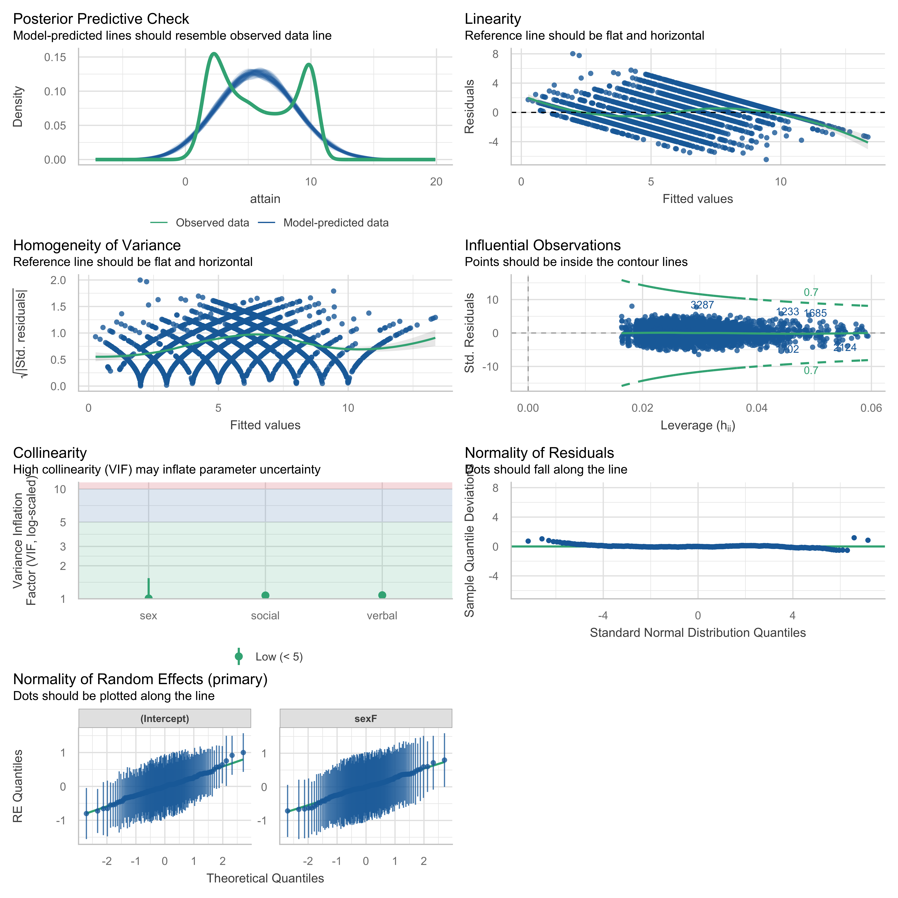
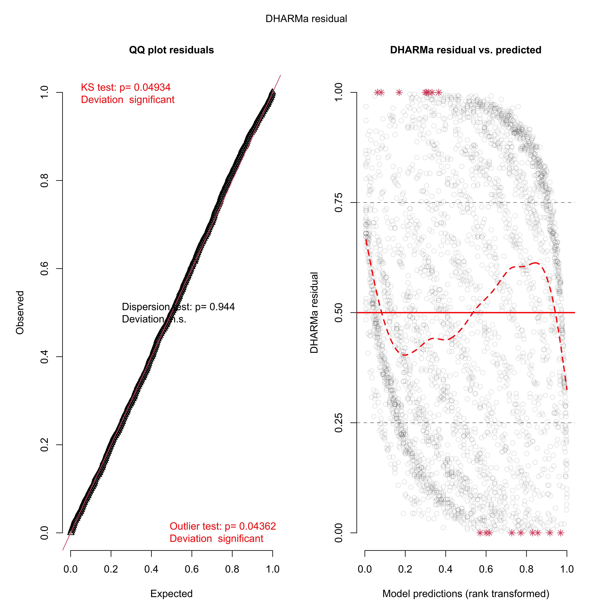
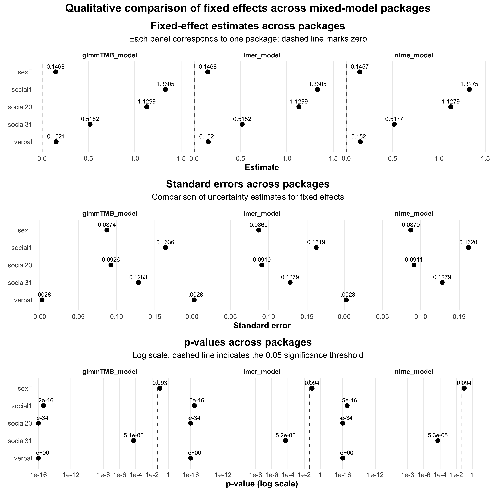
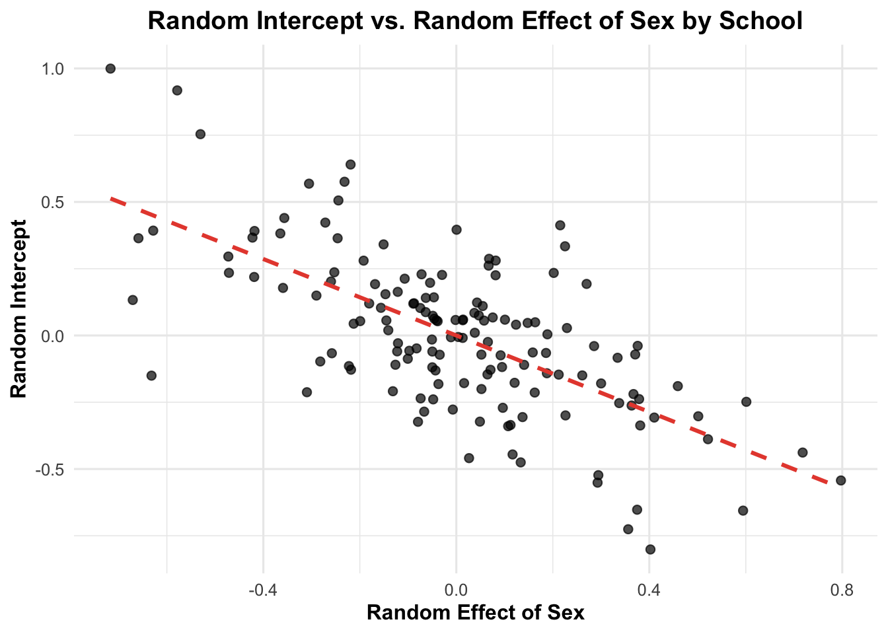

verbal attain primary sex social second
1 11 10 1 M 0 9
2 0 3 1 F 0 9
3 -14 2 1 M 0 9
4 -6 3 1 M 20 9
5 -30 2 1 F 0 9
6 -17 2 1 F 0 9
7 -17 4 1 F 0 1
8 -11 6 1 M 0 1
9 -9 4 1 M 0 9
10 -19 2 1 M 0 9Project 3
Introduction
This assignment focuses on analyzing the ScotsSec dataset from the mlmRev package using linear mixed models to investigate the influence of educational attainment (attain) on various factors, including social and verbal skills, while accounting for variations across primary schools (primary) and differences between genders (sex). The task involves fitting a linear mixed model with both fixed and random effects, simplifying the model to avoid singular fits, and conducting diagnostics using performance::check_model() and DHARMa. Additionally, the assignment requires comparisons of model fits and coefficients across different modeling approaches using lme4, nlme, and glmmTMB, and visualizing fixed effect estimates. The analysis also involves comparing denominator degrees of freedom methods for model evaluation, examining random effects, and understanding the implications of modeling choices, particularly regarding the treatment of fixed and random effects. Finally, likelihood ratio tests and the parametric bootstrap will be used to compare reduced models, highlighting the challenges of standard testing in mixed models due to their complexity and the potential for overparameterization.
Data Description
The ScotsSec dataset comprises scores attained by 3,435 Scottish secondary school students on a standardized test taken at age 16. The data is structured as a data frame with six variables, each representing different aspects of the students’ backgrounds and test performance. The dataset includes:
verbal: This variable represents the verbal reasoning score achieved by each student on a test administered upon their entry to secondary school. It is measured on a continuous scale, reflecting the students’ verbal reasoning abilities prior to secondary education.
attain: The attainment score indicates the result of the standardized test taken by students at age 16. This continuous variable serves as the primary response variable in analyses focusing on educational outcomes.
primary: A categorical variable (factor) that identifies the primary school attended by each student. This variable allows for the exploration of variations in attainment based on primary school affiliation.
sex: This factor variable represents the gender of the students, with levels designated as M (male) and F (female). It enables the examination of potential gender disparities in test scores.
social: A numeric variable that quantifies the student’s social class on a scale from low to high. This variable captures the socioeconomic background of students, which may influence educational attainment. However, we are going to use this variable as a factor.
second: A categorical variable (factor) indicating the secondary school attended by each student. Like the primary variable, it allows for analysis of attainment differences across various secondary schools.
This dataset is instrumental for investigating the educational performance of Scottish students, analyzing the influences of demographic factors, and exploring the relationships between social class, school type, and test scores.
Data Visualization:
The provided graphs depict the relationship between social status (on the left graph) and verbal ability (on the right graph) with educational attainment, categorized by sex and group size. In each graph, educational attainment (attain) is displayed on the y-axis, while the x-axis represents social status levels and verbal ability scores, respectively. Each data point represents individuals grouped by social status or verbal ability, with connecting lines linking points within each sex category, indicated by distinct colors (red for males and blue for females). The sizes of the points signify group sizes, as shown by the scale indicating values from 5 to 300 in the legend on the right.

The graphs reveal some patterns in educational attainment across both social and verbal dimensions. In the social status plot, educational attainment varies widely across social levels, with males and females following similar distribution patterns. Larger group sizes are concentrated around mid to high levels of social status, indicating more data points in these social categories. In the verbal ability plot, educational attainment generally increases with higher verbal ability scores, suggesting a positive correlation. Males and females demonstrate overlapping patterns in verbal ability and attainment levels, with some variability at lower scores. The plot highlights a trend of higher attainment with increasing verbal ability, regardless of sex.
a) Model Fit
Linear mixed model fit by REML. t-tests use Satterthwaite's method [
lmerModLmerTest]
Formula: attain ~ social + sex + verbal + (1 + social + sex + verbal |
primary)
Data: ScotsSec
REML criterion at convergence: 14664.7
Scaled residuals:
Min 1Q Median 3Q Max
-3.0672 -0.6790 -0.0003 0.6807 4.0121
Random effects:
Groups Name Variance Std.Dev. Corr
primary (Intercept) 0.3644464 0.60369
social1 0.1078781 0.32845 -0.88
social20 0.3265122 0.57141 -0.56 0.89
social31 0.4183900 0.64683 -0.37 0.43 0.39
sexF 0.3172506 0.56325 -0.63 0.43 0.15 -0.19
verbal 0.0001153 0.01074 0.77 -0.92 -0.86 -0.74 -0.21
Residual 3.9462499 1.98652
Number of obs: 3435, groups: primary, 148
Fixed effects:
Estimate Std. Error df t value Pr(>|t|)
(Intercept) 5.536e+00 8.147e-02 1.049e+02 67.950 < 2e-16 ***
social1 1.412e+00 1.633e-01 1.071e+03 8.645 < 2e-16 ***
social20 1.183e+00 1.071e-01 1.076e+02 11.051 < 2e-16 ***
social31 5.476e-01 1.451e-01 8.689e+01 3.773 0.000294 ***
sexF 1.484e-01 8.816e-02 9.702e+01 1.683 0.095523 .
verbal 1.515e-01 2.964e-03 2.379e+02 51.117 < 2e-16 ***
---
Signif. codes: 0 '***' 0.001 '**' 0.01 '*' 0.05 '.' 0.1 ' ' 1
Correlation of Fixed Effects:
(Intr) socil1 socl20 socl31 sexF
social1 -0.303
social20 -0.461 0.247
social31 -0.300 0.147 0.225
sexF -0.626 0.053 0.069 -0.022
verbal 0.380 -0.251 -0.307 -0.222 -0.124
optimizer (nloptwrap) convergence code: 0 (OK)
boundary (singular) fit: see help('isSingular')In the analysis of the linear mixed model fitted to the ScotsSec dataset, a warning regarding singularity was encountered. Specifically, the model displayed a boundary (singular) fit, indicating potential issues with model convergence. This is evidenced by the presence of negative eigenvalues during the fitting process, suggesting that the model may not have sufficient variability in the random effects structure. It is necessary thought to simplify the model in order to get some reliable results.
b) Model Simplification
Singular Fit:
Complex mixed-effect models, particularly those characterized by a high number of variance-covariance parameters, often encounter issues related to singularity. This phenomenon occurs when the estimated variance-covariance matrices do not achieve full rank, indicating that certain dimensions within the matrix have been estimated as exactly zero.
In simpler terms, singularity implies that the model may have insufficient variability captured in its random effects. For models with scalar random effects, such as those containing only intercepts, or those with two dimensions (e.g., intercept and slope), identifying singularity is relatively straightforward. In these cases, singularity manifests as variance estimates that are nearly zero or as correlations that approach -1 or 1.
However, detecting singularity in more complex models, which possess variance-covariance matrices of three or more dimensions, can be significantly more challenging. These models can exhibit singularity even when individual variance estimates are not close to zero, and correlation estimates do not necessarily converge to extreme values of +/-1. Therefore, careful attention is required in the interpretation of such models to ensure reliable conclusions and to address potential issues related to model fit.
By looking at the summary of the “full” model the variable with the smallest estimated variance is the variable “verbal”. Hence, from now on I wont treat “verbal” as a random effect. The revised model is as follows:
Groups Name Std.Dev. Corr
primary (Intercept) 0.60369
social1 0.32845 -0.879
social20 0.57141 -0.565 0.890
social31 0.64683 -0.368 0.433 0.388
sexF 0.56325 -0.631 0.434 0.145 -0.186
verbal 0.01074 0.767 -0.924 -0.861 -0.737 -0.215
Residual 1.98652 Linear mixed model fit by REML. t-tests use Satterthwaite's method [
lmerModLmerTest]
Formula: attain ~ social + sex + verbal + (1 + social + sex | primary)
Data: ScotsSec
REML criterion at convergence: 14672
Scaled residuals:
Min 1Q Median 3Q Max
-3.1243 -0.6825 -0.0060 0.6810 4.0783
Random effects:
Groups Name Variance Std.Dev. Corr
primary (Intercept) 0.29603 0.5441
social1 0.02381 0.1543 -0.88
social20 0.21015 0.4584 -0.43 0.74
social31 0.28245 0.5315 -0.20 0.18 -0.02
sexF 0.30351 0.5509 -0.61 0.27 0.03 -0.33
Residual 3.97404 1.9935
Number of obs: 3435, groups: primary, 148
Fixed effects:
Estimate Std. Error df t value Pr(>|t|)
(Intercept) 5.552e+00 7.755e-02 1.125e+02 71.596 < 2e-16 ***
social1 1.366e+00 1.609e-01 1.837e+03 8.491 < 2e-16 ***
social20 1.162e+00 1.019e-01 1.180e+02 11.406 < 2e-16 ***
social31 5.341e-01 1.403e-01 7.957e+01 3.807 0.000275 ***
sexF 1.509e-01 8.755e-02 9.958e+01 1.724 0.087854 .
verbal 1.520e-01 2.778e-03 3.383e+03 54.708 < 2e-16 ***
---
Signif. codes: 0 '***' 0.001 '**' 0.01 '*' 0.05 '.' 0.1 ' ' 1
Correlation of Fixed Effects:
(Intr) socil1 socl20 socl31 sexF
social1 -0.248
social20 -0.407 0.195
social31 -0.253 0.122 0.146
sexF -0.618 0.015 0.033 -0.048
verbal 0.209 -0.202 -0.165 -0.119 -0.082
optimizer (nloptwrap) convergence code: 0 (OK)
boundary (singular) fit: see help('isSingular')The analysis of the linear mixed model fitted to the ScotsSec dataset revealed several convergence issues, as indicated by multiple warnings. Specifically, the model experienced a degenerate Hessian with two negative eigenvalues, suggesting that the optimization algorithm struggled to find a stable solution. Additionally, warnings related to the inability to evaluate the scaled gradient further highlight potential difficulties in estimating the model parameters. Such convergence problems can indicate issues with the model’s complexity, possibly due to multicollinearity among predictors or inadequate data for the specified random effects structure.
By using the same method as before, I am going to create a new model using only sex as random effect. Moreover, it does not make sense to treat “social” as random-effect as its levels are not exchangeable (I am going to discuss that later).
Groups Name Std.Dev. Corr
primary (Intercept) 0.54409
social1 0.15431 -0.883
social20 0.45842 -0.428 0.738
social31 0.53146 -0.197 0.178 -0.015
sexF 0.55092 -0.609 0.274 0.034 -0.333
Residual 1.99350 Linear mixed model fit by REML. t-tests use Satterthwaite's method [
lmerModLmerTest]
Formula: attain ~ social + sex + verbal + (1 + sex | primary)
Data: ScotsSec
REML criterion at convergence: 14680.4
Scaled residuals:
Min 1Q Median 3Q Max
-3.2075 -0.6886 -0.0024 0.6880 3.9931
Random effects:
Groups Name Variance Std.Dev. Corr
primary (Intercept) 0.2405 0.4904
sexF 0.2868 0.5355 -0.66
Residual 4.0306 2.0076
Number of obs: 3435, groups: primary, 148
Fixed effects:
Estimate Std. Error df t value Pr(>|t|)
(Intercept) 5.553e+00 7.436e-02 1.646e+02 74.677 < 2e-16 ***
social1 1.331e+00 1.619e-01 3.366e+03 8.217 2.95e-16 ***
social20 1.130e+00 9.105e-02 3.368e+03 12.410 < 2e-16 ***
social31 5.182e-01 1.279e-01 3.405e+03 4.052 5.19e-05 ***
sexF 1.468e-01 8.689e-02 1.002e+02 1.690 0.0941 .
verbal 1.521e-01 2.780e-03 3.390e+03 54.721 < 2e-16 ***
---
Signif. codes: 0 '***' 0.001 '**' 0.01 '*' 0.05 '.' 0.1 ' ' 1
Correlation of Fixed Effects:
(Intr) socil1 socl20 socl31 sexF
social1 -0.203
social20 -0.335 0.191
social31 -0.241 0.129 0.201
sexF -0.642 0.000 0.025 0.036
verbal 0.219 -0.198 -0.182 -0.128 -0.083Finally, we got a “regular” fit using attain as a response variable, social, sex, verbal as (additive) fixed effects, where sex varying among primary schools.
c) Model Evaluation


Analysis and Conclusions
Our model diagnostics were performed using both performance::check_model() and the DHARMa package, each providing insights into model fit and assumptions.
Results using performance::check_model()
Posterior Predictive Check: The model-predicted data does not resemble the observed data, indicating a non reasonable model fit.
Linearity: The residuals vs. fitted values plot shows some deviations from the horizontal line, suggesting potential non-linearity. However, the deviations do not appear severe.
Homogeneity of Variance: The spread of standardized residuals varies slightly across fitted values, showing some heteroscedasticity. This indicates that the assumption of constant variance may not be fully met.
Influential Observations: It seem like we dont have problems from influential observations
Collinearity: The Variance Inflation Factor (VIF) for all variables is below the threshold of 5, suggesting low multicollinearity.
Normality of Residuals: The residual Q-Q plot shows minor deviations from normality. This deviation could impact inference, but the effect may be small, given the overall alignment with the reference line.
Normality of Random Effects: Additional Q-Q plots for random effects are shown, which would not typically appear in a fixed-effects-only model. Here, these plots check the normality assumption for the random intercept and slope associated with the
primarygrouping. Deviations from the line are minimal, suggesting that the random effects meet the normality assumption reasonably well.
DHARMa Diagnostics
QQ Plot Residuals: The Kolmogorov-Smirnov (KS) test for uniformity is significant (p = 0.04934), indicating a deviation from the expected residual distribution. While this suggests some issues with model fit, the significance is marginal, so it may not drastically affect inference.
Residual vs. Predicted Plot: The red trend line shows a nonlinear pattern, hinting at potential misspecification of fixed effects or variance structure in the model. Additionally, the residuals have some structure, especially near the boundaries, suggesting the model may not fully capture the data pattern.
Dispersion and Outlier Tests: The dispersion test is non-significant (p = 0.944), indicating no substantial overdispersion. However, the outlier test is significant (p = 0.04362), suggesting that some observations may be poorly predicted.
Key Differences from a Fixed-Effects-Only Linear Model
Compared to a fixed-effects-only linear model, the check_model() output for this mixed-effects model includes:
- Normality of Random Effects: Additional Q-Q plots for the random intercept and slope are unique to mixed models, where random effect assumptions are tested.
Overall Conclusion
The model generally meets assumptions, but there are minor issues with linearity, homogeneity of variance, and outliers. The DHARMa tests suggest possible minor deviations from the assumptions, especially in the residual distribution and the presence of outliers. These issues may slightly affect model accuracy but do not appear severe. Further investigation via simulation is needed to access the predictability of the model.
d) Model Fit Using Different Functions
Linear mixed-effects model fit by REML
Data: ScotsSec
AIC BIC logLik
14700.43 14761.83 -7340.216
Random effects:
Formula: ~1 + sex | primary
Structure: General positive-definite, Log-Cholesky parametrization
StdDev Corr
(Intercept) 0.4893337 (Intr)
sexF 0.5371628 -0.644
Residual 2.0069560
Fixed effects: attain ~ social + sex + verbal
Value Std.Error DF t-value p-value
(Intercept) 5.553656 0.07428654 3282 74.75992 0.0000
social1 1.327503 0.16197030 3282 8.19597 0.0000
social20 1.127906 0.09105860 3282 12.38659 0.0000
social31 0.517737 0.12787447 3282 4.04879 0.0001
sexF 0.145719 0.08698351 3282 1.67525 0.0940
verbal 0.152083 0.00278044 3282 54.69726 0.0000
Correlation:
(Intr) socil1 socl20 socl31 sexF
social1 -0.203
social20 -0.335 0.192
social31 -0.241 0.129 0.201
sexF -0.634 0.000 0.025 0.036
verbal 0.219 -0.198 -0.181 -0.128 -0.083
Standardized Within-Group Residuals:
Min Q1 Med Q3 Max
-3.209699436 -0.689458965 -0.002364182 0.686943687 4.000271515
Number of Observations: 3435
Number of Groups: 148 Family: gaussian ( identity )
Formula: attain ~ social + sex + verbal + (1 + sex | primary)
Data: ScotsSec
AIC BIC logLik -2*log(L) df.resid
14700.4 14761.8 -7340.2 14680.4 3425
Random effects:
Conditional model:
Groups Name Variance Std.Dev. Corr
primary (Intercept) 0.2404 0.4904
sexF 0.2868 0.5355 -0.66
Residual 4.0306 2.0076
Number of obs: 3435, groups: primary, 148
Dispersion estimate for gaussian family (sigma^2): 4.03
Conditional model:
Estimate Std. Error z value Pr(>|z|)
(Intercept) 5.553259 0.074498 74.54 < 2e-16 ***
social1 1.330514 0.163595 8.13 4.19e-16 ***
social20 1.129925 0.092598 12.20 < 2e-16 ***
social31 0.518215 0.128340 4.04 5.39e-05 ***
sexF 0.146847 0.087377 1.68 0.0928 .
verbal 0.152123 0.002793 54.46 < 2e-16 ***
---
Signif. codes: 0 '***' 0.001 '**' 0.01 '*' 0.05 '.' 0.1 ' ' 1e) Model Comparison
# Define the models (assuming you've already fitted them as model_final, model_nlme, and model_glmmTMB)
mod_list <- list(
lmer_model = model_final,
nlme_model = model_nlme,
glmmTMB_model = model_glmmTMB
)
# Use purrr::map_dfr to compare model fits
model_comparison <- purrr::map_dfr(mod_list, broom.mixed::glance, .id = "model")
# View the comparison
model_comparison# A tibble: 3 × 9
model nobs sigma logLik AIC BIC REMLcrit df.residual deviance
<chr> <int> <dbl> <dbl> <dbl> <dbl> <dbl> <int> <dbl>
1 lmer_model 3435 2.01 -7340. 14700. 14762. 14680. 3425 NA
2 nlme_model 3435 2.01 -7340. 14700. 14762. NA NA NA
3 glmmTMB_model 3435 2.01 -7340. 14700. 14762. NA 3425 13445.Using the log-likelihood as a criterion, we observe that the model fits obtained through the lmerTest and glmmTMB packages are indeed “identical or practically identical” with a log-likelihood of -7340.201 in both cases. In contrast, the fit from the nlme package, with a log-likelihood of -7340.216, is “slightly worse,” as it is marginally lower than the other two fits. Although this difference is minor (0.015), it suggests that the lmerTest and glmmTMB models achieve a marginally better fit compared to the nlme model.
f) Qualitative Comparison of the Estimates, Standard Errors, Df, and p-values Among Packages
# A tibble: 18 × 9
model effect term estimate std.error statistic df p.value component
<chr> <chr> <chr> <dbl> <dbl> <dbl> <dbl> <dbl> <chr>
1 lmer_mod… fixed (Int… 5.55 0.0744 74.7 165. 7.37e-129 <NA>
2 nlme_mod… fixed (Int… 5.55 0.0743 74.8 3282 0 <NA>
3 glmmTMB_… fixed (Int… 5.55 0.0745 74.5 NA 0 cond
4 lmer_mod… fixed sexF 0.147 0.0869 1.69 100. 9.41e- 2 <NA>
5 nlme_mod… fixed sexF 0.146 0.0870 1.68 3282 9.40e- 2 <NA>
6 glmmTMB_… fixed sexF 0.147 0.0874 1.68 NA 9.28e- 2 cond
7 lmer_mod… fixed soci… 1.33 0.162 8.22 3366. 2.95e- 16 <NA>
8 nlme_mod… fixed soci… 1.33 0.162 8.20 3282 3.52e- 16 <NA>
9 glmmTMB_… fixed soci… 1.33 0.164 8.13 NA 4.19e- 16 cond
10 lmer_mod… fixed soci… 1.13 0.0910 12.4 3368. 1.30e- 34 <NA>
11 nlme_mod… fixed soci… 1.13 0.0911 12.4 3282 1.80e- 34 <NA>
12 glmmTMB_… fixed soci… 1.13 0.0926 12.2 NA 3.02e- 34 cond
13 lmer_mod… fixed soci… 0.518 0.128 4.05 3405. 5.19e- 5 <NA>
14 nlme_mod… fixed soci… 0.518 0.128 4.05 3282 5.27e- 5 <NA>
15 glmmTMB_… fixed soci… 0.518 0.128 4.04 NA 5.39e- 5 cond
16 lmer_mod… fixed verb… 0.152 0.00278 54.7 3390. 0 <NA>
17 nlme_mod… fixed verb… 0.152 0.00278 54.7 3282 0 <NA>
18 glmmTMB_… fixed verb… 0.152 0.00279 54.5 NA 0 cond fe_plot_df <- fixed_effects_comparison %>%
filter(term != "(Intercept)") %>% # optional: drop intercept if you prefer
mutate(
model = factor(model),
term = factor(term, levels = rev(sort(unique(term))))
) %>%
# ensure p-values exist; broom outputs may use "p.value"
rename(p_value = p.value) %>%
mutate(
p_value = ifelse(is.na(p_value), NA_real_, p_value),
p_floor = 1e-16,
p_plot = pmax(p_value, p_floor), # avoids log(0) issues
p_label = ifelse(is.na(p_value), NA_character_,
ifelse(p_value < 0.001, format(p_value, scientific = TRUE, digits = 2),
sprintf("%.3f", p_value)))
)
theme_portfolio <- theme_minimal(base_size = 12) +
theme(
plot.title.position = "plot",
plot.title = element_text(face = "bold", size = 15, hjust = 0.5),
plot.subtitle = element_text(hjust = 0.5, margin = margin(b = 8)),
axis.title = element_text(face = "bold"),
strip.text = element_text(face = "bold"),
panel.grid.minor = element_blank(),
panel.grid.major.y = element_blank()
)
p_est <- ggplot(fe_plot_df, aes(x = estimate, y = term)) +
geom_vline(xintercept = 0, linetype = "dashed", linewidth = 0.6, alpha = 0.7) +
geom_point(size = 2.6) +
geom_text(
aes(label = sprintf("%.4f", estimate)),
vjust = -0.8,
size = 3
) +
facet_wrap(~ model, nrow = 1) +
scale_x_continuous(expand = expansion(mult = c(0.05, 0.15))) +
labs(
title = "Fixed-effect estimates across packages",
subtitle = "Each panel corresponds to one package; dashed line marks zero",
x = "Estimate",
y = NULL
) +
theme_portfolio
p_se <- ggplot(fe_plot_df, aes(x = std.error, y = term)) +
geom_point(size = 2.6) +
geom_text(
aes(label = sprintf("%.4f", std.error)),
vjust = -0.8,
size = 3
) +
facet_wrap(~ model, nrow = 1) +
scale_x_continuous(expand = expansion(mult = c(0.05, 0.15))) +
labs(
title = "Standard errors across packages",
subtitle = "Comparison of uncertainty estimates for fixed effects",
x = "Standard error",
y = NULL
) +
theme_portfolio
p_pval <- ggplot(fe_plot_df, aes(x = p_plot, y = term)) +
geom_vline(xintercept = 0.05, linetype = "dashed",
linewidth = 0.6, alpha = 0.8) +
geom_point(size = 2.6) +
geom_text(
aes(label = p_label),
vjust = -0.8,
size = 3,
na.rm = TRUE
) +
facet_wrap(~ model, nrow = 1) +
scale_x_log10(
limits = c(1e-16, 1),
breaks = c(1, 1e-2, 1e-4, 1e-6, 1e-8, 1e-12, 1e-16),
labels = c("1", "1e-2", "1e-4", "1e-6", "1e-8", "1e-12", "1e-16"),
expand = expansion(mult = c(0.02, 0.12))
) +
labs(
title = "p-values across packages",
subtitle = "Log scale; dashed line indicates the 0.05 significance threshold",
x = "p-value (log scale)",
y = NULL
) +
theme_portfolio
(p_est / p_se / p_pval) +
plot_annotation(
title = "Qualitative comparison of fixed effects across mixed-model packages",
theme = theme(plot.title = element_text(face = "bold", hjust = 0.5, size = 16))
)
Based on the extracted coefficients from the three models (lmer_model, nlme_model, and glmmTMB_model), the fixed effects show strong consistency across packages. The intercept estimates are practically identical, with differences well within a tolerance of 10^-4, indicating robustness in the intercept term across these models. The sexF term also displays nearly identical estimates and very similar standard errors, suggesting consistency in the estimated effect of this predictor. For the social terms (social1, social20, and social31), the estimates and standard errors are very similar across models, with variations generally within a tolerance of 0.01, although social31 has slightly more variation in the standard error, which remains within acceptable bounds. The verbal term shows practically identical estimates and standard errors across all three models, further supporting the stability of this effect across packages. The degrees of freedom vary among models, likely due to differing estimation methods; however, p-values are consistently significant across models (often <2e-16), making them identical or practically identical in terms of statistical significance.
g) Coefficient Plot of the Fixed Effects
I decided to create two versions of the coefficient plot for fixed effects to provide a clearer understanding of the model estimates and their variances. The first plot is a straightforward visualization of the fixed effect estimates with their confidence intervals, helping to convey the direction and relative magnitude of each predictor’s effect. However, to give more insight into the variability of each estimate, I created a second plot that includes additional enhancements: I increased the point size, added a dashed vertical line at zero to help identify significant effects, and included the exact estimate values above each point for clarity. The second plot also includes a bit of padding on the x-axis to avoid any crowding of estimates near the plot edges. These changes make it easier to distinguish differences in variance between fixed effects, as well as to quickly see which estimates are both positive and statistically significant.
# Plot 1 (your first version)
p1 <- ggplot(fixed_effects_comparison, aes(x = estimate, y = model, color = model)) +
geom_point() +
geom_errorbarh(aes(xmin = estimate - std.error, xmax = estimate + std.error), height = 0.2) +
facet_wrap(~term, scales = "free") +
labs(
title = "Coefficient Plot of Fixed Effects (basic)",
x = "Estimate",
y = "Model"
) +
theme_minimal() +
theme(plot.title = element_text(hjust = 0.5, face = "bold"))
# Plot 2 (your enhanced version)
p2 <- ggplot(fixed_effects_comparison, aes(x = estimate, y = model, color = model)) +
geom_point(size = 3) +
geom_errorbarh(aes(xmin = estimate - std.error, xmax = estimate + std.error), height = 0.2) +
facet_wrap(~term, scales = "free") +
geom_vline(xintercept = 0, linetype = "dashed", color = "grey") +
geom_text(
aes(label = sprintf("%.4f", estimate)),
vjust = -1,
size = 3,
color = "black"
) +
scale_x_continuous(expand = expansion(mult = c(0.1, 0.1))) +
labs(
title = "Coefficient Plot of Fixed Effects (labeled)",
x = "Estimate",
y = "Model"
) +
theme_minimal() +
theme(
plot.title = element_text(hjust = 0.5, face = "bold"),
legend.position = "bottom"
)
# Combine into ONE figure (two rows, not mixed)
(p1 / p2) +
plot_annotation(
title = "Fixed Effects Coefficient Plots",
theme = theme(plot.title = element_text(hjust = 0.5, face = "bold", size = 16))
)
h) Comparison Between Satterthwaite and Kenward-Roger and lme
The table compares the Satterthwaite and Kenward-Roger approaches for computing denominator degrees of freedom (df) and p-values for a linear mixed-effects model. The effects considered include the intercept, social factors, sex, and verbal ability.
## Assuming model_final was fitted as:
## model_final <- lmer(attain ~ social + sex + verbal + (1 + sex | primary), data = ScotsSec)
## model_nlme <- nlme::lme(fixed = attain ~ social + sex + verbal, random = ~ 1 + sex | primary, data = ScotsSec, method = 'REML', control = lmeControl(opt = "optim"))
## Get summary with Satterthwaite approximation
satt_summary <- coef(summary(model_final, ddf = "Satterthwaite"))
## Get summary with Kenward-Roger approximation
kr_summary <- coef(summary(model_final, ddf = "Kenward-Roger"))
## Get summary from lme
lme_summary <- coef(summary(model_nlme))
## Compare the degrees of freedom and p-values
comparison <- data.frame(
Satt_df = satt_summary[, "df"],
Satt_p = satt_summary[, "Pr(>|t|)"],
KR_df = kr_summary[, "df"],
KR_p = kr_summary[, "Pr(>|t|)"],
lme_df = lme_summary[, "DF"],
lme_p = lme_summary[, "p-value"]
)
print(comparison) Satt_df Satt_p KR_df KR_p lme_df lme_p
(Intercept) 164.5601 7.369728e-129 163.8634 2.793661e-128 3282 0.000000e+00
social1 3365.7651 2.952727e-16 3373.6117 3.347148e-16 3282 3.524638e-16
social20 3367.5014 1.295222e-34 3374.0254 1.660076e-34 3282 1.798810e-34
social31 3405.3106 5.187761e-05 3408.5651 5.309445e-05 3282 5.267246e-05
sexF 100.2033 9.414403e-02 111.6036 9.501857e-02 3282 9.398137e-02
verbal 3390.0592 0.000000e+00 3394.5626 0.000000e+00 3282 0.000000e+00## Calculate absolute differences
comparison$df_diff_Satt_KR <- abs(comparison$Satt_df - comparison$KR_df)
comparison$p_diff_Satt_KR <- abs(comparison$Satt_p - comparison$KR_p)
comparison$df_diff_Satt_lme <- abs(comparison$Satt_df - comparison$lme_df)
comparison$p_diff_Satt_lme <- abs(comparison$Satt_p - comparison$lme_p)
comparison$df_diff_lme_KR <- abs(comparison$lme_df - comparison$KR_df)
comparison$p_diff_lme_KR <- abs(comparison$lme_p - comparison$KR_p)
print(comparison[, c( "df_diff_Satt_KR", "p_diff_Satt_KR", "df_diff_Satt_lme", "p_diff_Satt_lme", "df_diff_lme_KR", "p_diff_lme_KR")]) df_diff_Satt_KR p_diff_Satt_KR df_diff_Satt_lme p_diff_Satt_lme
(Intercept) 0.6966424 2.056688e-128 3117.43993 7.369728e-129
social1 7.8465400 3.944211e-17 83.76511 5.719112e-17
social20 6.5239218 3.648544e-35 85.50144 5.035877e-35
social31 3.2545016 1.216838e-06 123.31056 7.948454e-07
sexF 11.4003083 8.745395e-04 3181.79667 1.626613e-04
verbal 4.5033569 0.000000e+00 108.05923 0.000000e+00
df_diff_lme_KR p_diff_lme_KR
(Intercept) 3118.13657 2.793661e-128
social1 91.61165 1.774902e-17
social20 92.02537 1.387333e-35
social31 126.56506 4.219924e-07
sexF 3170.39636 1.037201e-03
verbal 112.56258 0.000000e+00# Build comparable tables (term, estimate, se, p, df)
satt_df <- data.frame(
term = rownames(satt_summary),
estimate = satt_summary[, "Estimate"],
std.error = satt_summary[, "Std. Error"],
p.value = satt_summary[, "Pr(>|t|)"],
df = satt_summary[, "df"],
method = "Satterthwaite",
row.names = NULL
)
kr_df <- data.frame(
term = rownames(kr_summary),
estimate = kr_summary[, "Estimate"],
std.error = kr_summary[, "Std. Error"],
p.value = kr_summary[, "Pr(>|t|)"],
df = kr_summary[, "df"],
method = "Kenward-Roger",
row.names = NULL
)
lme_df <- data.frame(
term = rownames(lme_summary),
estimate = lme_summary[, "Value"],
std.error = lme_summary[, "Std.Error"],
p.value = lme_summary[, "p-value"],
df = lme_summary[, "DF"],
method = "nlme::lme",
row.names = NULL
)
comp_df <- bind_rows(satt_df, kr_df, lme_df) %>%
mutate(
method = factor(method, levels = c("Satterthwaite", "Kenward-Roger", "nlme::lme")),
term = factor(term, levels = rev(unique(term))),
# safe p-values for log scale
p_floor = 1e-16,
p_plot = pmax(p.value, p_floor),
# labels
est_lab = sprintf("%.4f", estimate),
se_lab = sprintf("%.4f", std.error),
p_lab = ifelse(p.value < 0.001, format(p.value, scientific = TRUE, digits = 2),
sprintf("%.3f", p.value))
)
theme_portfolio <- theme_minimal(base_size = 12) +
theme(
plot.title.position = "plot",
plot.title = element_text(face = "bold", size = 15, hjust = 0.5),
plot.subtitle = element_text(hjust = 0.5, margin = margin(b = 8)),
axis.title = element_text(face = "bold"),
strip.text = element_text(face = "bold"),
panel.grid.minor = element_blank(),
panel.grid.major.y = element_blank()
)
p_est <- ggplot(comp_df, aes(x = estimate, y = term)) +
geom_vline(xintercept = 0, linetype = "dashed", linewidth = 0.6, alpha = 0.7) +
geom_point(size = 2.6) +
geom_text(aes(label = est_lab), vjust = -0.8, size = 3) +
facet_wrap(~ method, nrow = 1) +
scale_x_continuous(expand = expansion(mult = c(0.05, 0.15))) +
labs(
title = "Fixed-effect estimates",
subtitle = "Satterthwaite vs Kenward–Roger vs nlme",
x = "Estimate",
y = NULL
) +
theme_portfolio
p_se <- ggplot(comp_df, aes(x = std.error, y = term)) +
geom_point(size = 2.6) +
geom_text(aes(label = se_lab), vjust = -0.8, size = 3) +
facet_wrap(~ method, nrow = 1) +
scale_x_continuous(expand = expansion(mult = c(0.05, 0.15))) +
labs(
title = "Standard errors",
subtitle = "Comparison of uncertainty estimates across approaches",
x = "Std. error",
y = NULL
) +
theme_portfolio
p_pval <- ggplot(comp_df, aes(x = p_plot, y = term)) +
geom_vline(xintercept = 0.05, linetype = "dashed", linewidth = 0.6, alpha = 0.8) +
geom_point(size = 2.6) +
geom_text(aes(label = p_lab), vjust = -0.8, size = 3) +
facet_wrap(~ method, nrow = 1) +
scale_x_log10(
limits = c(1e-16, 1),
breaks = c(1, 1e-2, 1e-4, 1e-6, 1e-8, 1e-12, 1e-16),
labels = c("1", "1e-2", "1e-4", "1e-6", "1e-8", "1e-12", "1e-16"),
expand = expansion(mult = c(0.02, 0.12))
) +
labs(
title = "p-values",
subtitle = "Log scale; dashed line indicates 0.05 threshold",
x = "p-value (log scale)",
y = NULL
) +
theme_portfolio
(p_est / p_se / p_pval) +
plot_annotation(
title = "Comparison of inference across denominator df approximations and nlme",
theme = theme(plot.title = element_text(face = "bold", hjust = 0.5, size = 16))
)
The comparison between the Satterthwaite and Kenward-Roger approximations for computing denominator degrees of freedom (df) in the mixed model shows close agreement, though some differences in df values and p-values are observed. For most predictors, the differences in df between Satterthwaite and Kenward-Roger are minor, with the df varying slightly—often by only a few units. Notably, predictors such as “social1” and “social20” display larger df discrepancies, though these differences do not substantially impact p-values, as both methods consistently yield highly significant results for the same predictors. Compared with the results from the lme model, which provides fixed df values without these refined approximations, both Satterthwaite and Kenward-Roger offer more precise df estimates, particularly beneficial in cases of smaller sample sizes or complex random structures. However, in this example, these differences are not practically important, as they do not alter the statistical significance or interpretation of the model.
i) Plot of the Random Effect of Sex for Each school
## model_final <- lmer(attain ~ social + sex + verbal + (1 + sex | primary), data = ScotsSec)
## Extract random effects and convert to a tidy data frame
random_effects <- ranef(model_final, condVar = TRUE, drop = TRUE)
random_effects_df <- random_effects$primary %>%
as.data.frame() %>%
rownames_to_column(var = "school") %>%
rename(
intercept = `(Intercept)`,
sex_effect = `sexF`
)
# Plot: Random Effect of Sex vs. Random Intercept by School
ggplot(random_effects_df, aes(x = sex_effect, y = intercept)) +
geom_point(color = "black", size = 2, alpha = 0.7) +
geom_smooth(method = "lm", se = FALSE, color = "#E74C3C", linetype = "dashed", formula = y ~ x) +
labs(
title = "Random Intercept vs. Random Effect of Sex by School",
x = "Random Effect of Sex",
y = "Random Intercept"
) +
theme_minimal(base_size = 12) +
theme(
plot.title = element_text(face = "bold", hjust = 0.5),
axis.title = element_text(face = "bold"),
plot.background = element_rect(fill = "white", color = NA)
)
[1] "The Degree of Linear Correlation is: "
[2] "-0.6633" In the analysis of school-level random effects from a linear mixed-effects model predicting attainment, we observe a notable negative correlation between the random intercepts and the random effects of sex for each school (r =−0.6633). The plot illustrates this relationship, with each point representing a school, showing how schools with higher random intercepts tend to have smaller (or even negative) deviations in the effect of sex on attainment. The fitted trend line, shown as a dashed red line, further emphasizes this negative linear relationship. This finding suggests that as the baseline attainment (random intercept) of a school increases, the difference between genders in attainment tends to decrease, potentially indicating that schools with higher baseline attainment levels exhibit less gender disparity in achievement.
k) Some Weird Parametrization
In modeling educational attainment using the ScotsSec dataset, omitting the fixed effect of sex while retaining its random variation across primary schools would yield an incomplete understanding of the data’s structure. Specifically, the fixed effect of sex accounts for systematic differences in attainment scores attributable to gender, providing a baseline adjustment that is critical for interpreting the influence of other variables such as social class and verbal reasoning. Conversely, allowing for random variation of sex across primary schools suggests that the effect of gender on attainment may differ by school context, yet without the fixed effect, this model would not appropriately estimate or control for the average gender disparity across the entire sample. This could lead to biased estimates of other predictors and ultimately obscure the nuanced interactions between sex, social class, and school type, thereby compromising the validity and interpretability of the findings.
l) Evaluating Random Effects in Linear Mixed-Effects Models: A Comparison of Standard Likelihood Ratio Tests and Parametric Bootstrapping Techniques
# Model m3: Linear mixed-effects model with separate random intercept and random slope for sex by primary school
m3 <- lme4::lmer(attain ~ 1 + social + sex + verbal + (1 | primary) + (0 + dummy(sex, "M") | primary), data = ScotsSec, REML = FALSE)
# Explanation: (I used different optimization algo and increase the umber of interactions to resolve some convergence issues)
# - Fixed effects: Same as m3.
# - Random effects: Separate terms for the random intercept (1 | primary) and the random slope for sex (0 + dummy(sex, "M") | primary).
# - This model has the same random structure as m3 but separates the intercept and slope components, consider them independent.
# Model m2: Linear mixed-effects model with both random intercept and random slope for sex by primary school
m2 <- update(m3, . ~ 1 + social + sex + verbal + (1 + sex | primary))
# Explanation:
# - Fixed effects: Intercept, social class (social), sex, and verbal ability (verbal).
# - Random effects: Random intercept and random slope for sex, grouped by primary school.
# - REML = FALSE is used to fit the model with maximum likelihood, as it allows for comparison between models via ANOVA.
# Model m1: Linear mixed-effects model with only a random intercept for primary school
m1 <- update(m3, . ~ 1 + social + sex + verbal + (1 | primary))
# Explanation:
# - Fixed effects: Same as m3.
# - Random effects: Only a random intercept for primary school, without a random slope for sex.
# - This model tests if the random slope for sex by primary school is necessary.
# Model m0: Linear model without random effects (i.e., fixed-effects model)
m0 <- lm(attain ~ 1 + social + sex + verbal, data = ScotsSec)
# Explanation:
# - Fixed effects: Same as m3.
# - No random effects; this is a traditional linear regression model.
# - This model serves as a baseline to assess the need for random intercepts and slopes.
# Conduct ANOVA to compare models
# Explanation:
# - Sequential tests comparing each model to the simpler model, allowing assessment of the need for random effects.
# - These tests help determine if random slopes, intercepts, or both improve model fit.
anova(m3, m2, m1, m0)Data: ScotsSec
Models:
m0: attain ~ 1 + social + sex + verbal
m1: attain ~ social + sex + verbal + (1 | primary)
m3: attain ~ 1 + social + sex + verbal + (1 | primary) + (0 + dummy(sex, "M") | primary)
m2: attain ~ social + sex + verbal + (1 + sex | primary)
npar AIC BIC logLik -2*log(L) Chisq Df Pr(>Chisq)
m0 7 14713 14756 -7349.4 14699
m1 8 14683 14732 -7333.4 14667 31.9812 1 1.557e-08 ***
m3 9 14677 14732 -7329.5 14659 7.9352 1 0.004848 **
m2 10 14676 14737 -7328.0 14656 2.9059 1 0.088259 .
---
Signif. codes: 0 '***' 0.001 '**' 0.01 '*' 0.05 '.' 0.1 ' ' 1The analysis compared four models predicting educational attainment (attain) in the ScotsSec dataset, progressively adding random effects to examine their impact on model fit. Model m0 served as a baseline linear model with only fixed effects for social class, sex, and verbal ability, while Model m1 introduced a random intercept for primary school to account for differences between schools. Model m1 significantly improved fit over m0 (X² = 31.9812, df = 1, p < 0.001), suggesting that including school-level variation enhances explanatory power. Model m3 further added a separate random slope for sex, allowing the effect of sex to vary across schools independently from the intercept. This model improved significantly over m1 (X² = 7.9352, df = 1, p = 0.004848), indicating that sex effects vary by school context. Model m2, specifying both a random intercept and random slope for sex but treating them as correlated, showed a smaller, non-significant improvement over m3 (X² = 2.9059, df = 1, p = 0.088259), suggesting that treating the random intercept and slope as independent better captures the data structure. Overall, model m3 provides the best fit with interpretable random effects, balancing complexity and model improvement (there is no big difference from the model with correlated random effects).
- Comparing Linear Mixed-Effects Models with Parametric Bootstrap Testing: Assessing the Impact of Random Slopes for Sex by Primary School
Bootstrap test; time: 46.78 sec; samples: 1000; extremes: 0;
Requested samples: 1000 Used samples: 741 Extremes: 0
large : attain ~ social + sex + verbal + (1 + sex | primary)
stat df p.value
LRT 10.841 2 0.004425 **
PBtest 10.841 0.001348 **
---
Signif. codes: 0 '***' 0.001 '**' 0.01 '*' 0.05 '.' 0.1 ' ' 1A parametric bootstrap test was conducted to further examine the necessity of including a random slope for sex in the model predicting educational attainment (“attain”). Comparing models m1 (random intercept only) and m2 (random intercept and slope for sex), the likelihood ratio test (LRT) yielded a significant improvement (X² = 10.841, df = 2, p = 0.004425), suggesting that including a random slope for sex captures meaningful variability across primary schools. The parametric bootstrap test confirmed this result, with a significant p-value (p = 0.001348), reinforcing that the inclusion of the random slope significantly improves model fit. Thus, model m2, which allows for both random intercepts and slopes, is supported as an improved model over m1, capturing school-level differences in the effect of sex on educational attainment.
- Evaluating the Impact of Including an Independent Random Slope for Sex by Primary School on Model Fit for Educational Attainment
Bootstrap test; time: 41.80 sec; samples: 1000; extremes: 0;
Requested samples: 1000 Used samples: 570 Extremes: 0
large : attain ~ 1 + social + sex + verbal + (1 | primary) + (0 + dummy(sex,
"M") | primary)
stat df p.value
LRT 7.9352 1 0.004848 **
PBtest 7.9352 0.001751 **
---
Signif. codes: 0 '***' 0.001 '**' 0.01 '*' 0.05 '.' 0.1 ' ' 1A parametric bootstrap test was conducted to assess the necessity of including an independent random slope for sex by primary school in the model predicting educational attainment (“attain”). Model m1 included only a random intercept for primary school, while model m3 added a separate, independent random slope for sex. The likelihood ratio test (LRT) showed a significant improvement in fit with the addition of the random slope (X² = 7.9352, df = 1, p = 0.004848), suggesting that the effect of sex on attainment varies across primary schools. This finding was further supported by the parametric bootstrap test, which yielded a p-value of 0.001751. These results indicate that incorporating an independent random slope for sex by school (as in model m3) provides a significantly better fit than a model with only a random intercept, capturing meaningful school-level variation in the effect of sex on educational attainment.
To sum up, the results from the likelihood ratio tests and parametric bootstrap tests consistently indicate that including random effects for primary school meaningfully improves model fit in predicting educational attainment (“attain”). Model comparisons demonstrated that adding a random intercept for primary school (m1) significantly enhanced fit over the fixed-effects model (m0), highlighting the importance of accounting for school-level variability. Furthermore, including a random slope for sex, either as a separate independent term (m3) or as a correlated term with the intercept (m2), also significantly improved fit compared to the intercept-only model (m1). The parametric bootstrap tests confirmed these improvements, with significant p-values (m2 vs. m1: p = 0.001348; m3 vs. m1: p = 0.001751), underscoring the relevance of allowing the effect of sex to vary by school. Overall, model m3, which includes a separate random intercept and slope for sex by primary school, provides a balanced, interpretable approach that effectively captures school-level differences in the influence of sex on attainment.
Conclusion / Discussion
The Bobyqa optimizer is chosen for fitting linear mixed-effects models because it effectively handles complex, non-linear optimization problems that often arise in such models. Its ability to search in a trust region helps avoid issues of convergence that can occur with simpler algorithms, especially when dealing with multiple random effects or high-dimensional parameter spaces. Additionally, Bobyqa is robust in terms of stability and efficiency, making it suitable for models with intricate covariance structures. The increased iteration limit of 10 million iterations ensures that the algorithm has ample opportunity to converge to an optimal solution, which is particularly important when fitting models with complicated random effects. Overall, this choice aims to enhance model reliability and accuracy in parameter estimation. However, the algorithm can also get trapped in local minima, yielding biased parameter estimates. Additionally, reliance on Bobyqa may overlook important model diagnostics, which could result in conclusions based on misspecified models or poor data quality. During the diagnostic process, we had signs for violations of the assumptions of the model, as well as, outliers (how is possible the graph for influential observations looks desirable, while the test and graph for outliers not?). Outlines is a very important issue that may add bias to our estimates and inflate p-values, so further investigation is required.
Another very important topic is the reliability of the LRT comparison between the models m0, m1, m2 and m3. For instance, in this analysis, we evaluated two linear mixed-effects models to assess the impact of social class, sex, and verbal ability on educational attainment, while accounting for the hierarchical structure of the data with primary schools as a grouping factor. Model m2 incorporated a random intercept and a random slope for sex, allowing us to investigate whether the relationship between sex and educational attainment varied by primary school. In contrast, Model m1 included only a random intercept for primary school, serving as a baseline to determine the necessity of the random slope for sex. To compare the models, we conducted a likelihood ratio test (LRT); however, we acknowledge that LRT-based null hypothesis assumes zero variance, it is on the boundary of the parameter space, which violates the assumptions underlying the standard asymptotic chi-square distribution ( the information matrix is not inversable) used in LRTs (the distribution in this case looks more to a mixture). As shown by Self and Liang (1987) and others, when the null hypothesis is on the boundary, the standard LRT becomes conservative, meaning it tends to yield higher p-values than it should. This can reduce the test’s sensitivity, making it harder to detect significant random effects when they actually exist (In simpler cases (e.g., one random effect variance), the p-value under standard LRT tends to be approximately twice as large as it would be with a correctly adjusted test (Pinheiro and Bates 2000)). (As we have indications for outliers, a coherent question would be: How the outliers could inflate the above comparisons?)
Parametric bootstrapping involves simulating data under the null hypothesis (e.g. σ^2 = 0 ), fitting models to each simulated dataset, and calculating the likelihood ratio for each. The empirical distribution of the test statistic from these simulations provides an adjusted p-value that better reflects the boundary constraint.
References
Barr, Dale J., Roger Levy, Christoph Scheepers, and Harry J. Tily. 2013. “Random Effects Structure for Confirmatory Hypothesis Testing: Keep It Maximal.” Journal of Memory and Language 68 (3): 255–78. https://doi.org/10.1016/j.jml.2012.11.001.
Bates, Douglas, Reinhold Kliegl, Shravan Vasishth, and Harald Baayen. 2015. “Parsimonious Mixed Models.” arXiv:1506.04967 [Stat], June. https://arxiv.org/abs/1506.04967.
Bates, Douglas, Martin Mächler, Ben Bolker, and Steve Walker. 2015. “Fitting Linear MixedEffects Models Using Lme4.” Journal of Statistical Software 67 (October): 1–48. https://doi. org/10.18637/jss.v067.i01.
Biswas, Keya. 2015. “Performances of Different Estimation Methods for Generalized Linear Mixed Models.” Master’s thesis, McMaster University. https://macsphere.mcmaster.ca/ bitstream/11375/17272/2/M.Sc_Thesis_final_Keya_Biswas.pdf.
Bolker, Benjamin M. 2015. “Generalized Linear Mixed Models.” In Ecological Statistics: Contemporary Theory and Application, edited by Gordon A. Fox, Simoneta Negrete-Yankelevich, and Vinicio J. Sosa. Oxford University Press.
Booth, James G., and James P. Hobert. 1999. “Maximizing Generalized Linear Mixed Model Likelihoods with an Automated Monte Carlo EM Algorithm.” Journal of the Royal Statistical Society. Series B 61 (1): 265–85. https://doi.org/10.1111/1467-9868.00176.
Breslow, N. E. 2004. “Whither PQL?” In Proceedings of the Second Seattle Symposium in Biostatistics: Analysis of Correlated Data, edited by Danyu Y. Lin and P. J. Heagerty, 1–22. Springer.
Crawley, Michael J. 2002. Statistical Computing: An Introduction to Data Analysis Using S-PLUS. John Wiley & Sons.
Gelman, Andrew. 2005. “Analysis of Variance: Why It Is More Important Than Ever.” Annals of Statistics 33 (1): 1–53. https://doi.org/doi:10.1214/009053604000001048.
Matuschek, Hannes, Reinhold Kliegl, Shravan Vasishth, Harald Baayen, and Douglas Bates.
- “Balancing Type I Error and Power in Linear Mixed Models.” Journal of Memory and Language 94 (June): 305–15. https://doi.org/10.1016/j.jml.2017.01.001.
Murtaugh, Paul A. 2007. “Simplicity and Complexity in Ecological Data Analysis.” Ecology 88 (1): 56–62. http://www.esajournals.org/doi/abs/10.1890/0012-9658%282007%2988%5B5 6%3ASACIED%5D2.0.CO%3B2.
Pinheiro, José C., and Douglas M. Bates. 1996. “Unconstrained Parametrizations for VarianceCovariance Matrices.” Statistics and Computing 6 (3): 289–96. https://doi.org/10.1007/BF
Ponciano, José Miguel, Mark L. Taper, Brian Dennis, and Subhash R. Lele. 2009. “Hierarchical Models in Ecology: Confidence Intervals, Hypothesis Testing, and Model Selection Using Data Cloning.” Ecology 90 (2): 356–62. http://www.jstor.org/stable/27650990.
Stroup, Walter W. 2014. “Rethinking the Analysis of Non-Normal Data in Plant and Soil Science.” Agronomy Journal 106: 1–17. https://doi.org/10.2134/agronj2013.0342.
Sung, Yun Ju, and Charles J. Geyer. 2007. “Monte Carlo Likelihood Inference for Missing Data Models.” The Annals of Statistics 35 (3): 990–1011. https://doi.org/10.1214/009053606000
I read assignments for previous years in order to gain some great code ideas and identify previous mistakes inorder to avoid them.
I used Chat Gpt extensively to create reports (I was writting my conclusions and after that, I was asking Chat Gpt to write it in a formal way as a report).
I used chat-gpt to code some plots I didnt know and create a more professional output.